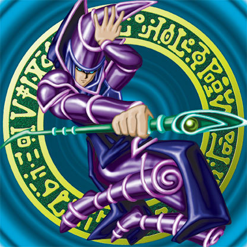
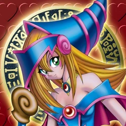
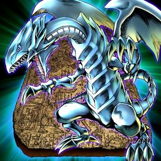
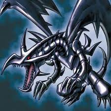
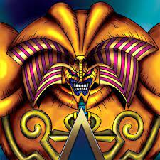
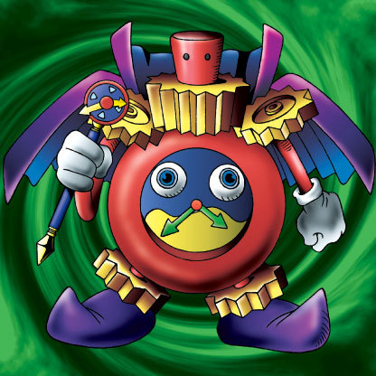
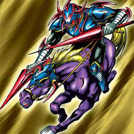
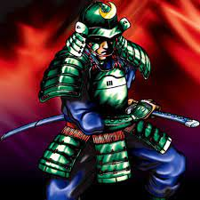

-
Dark Magician
- ATK 2500
- DEF 2100
[Spellcaster / Normal] The ultimate wizard in terms of attack and defense.
-
Dark Magician Girl
- ATK 2000
- DEF 1700
[Spellcaster / Effect] Gains 300 ATK for every "Dark Magician" or "Magician of Black Chaos" in the GY.
-
Blue-Eyes White Dragon
- ATK 3000
- DEF 2500
[Dragon / Normal] This legendary dragon is a powerful engine of destruction. Virtually invincible, very few have faced this awesome creature and lived to tell the tale.
-
Red-Eyes Black Dragon
- ATK 2400
- DEF 2000
[Dragon / Normal] A ferocious dragon with a deadly attack.
-
Exodia the Forbidden One
- ATK 1000
- DEF 1000
[Spellcaster / Effect] If you have "Right Leg of the Forbidden One", "Left Leg of the Forbidden One", "Right Arm of the Forbidden One" and "Left Arm of the Forbidden One" in addition to this card in your hand, you win the Duel.
-
Time Wizard
- ATK 500
- DEF 400
[Spellcaster / Effect] Once per turn: You can toss a coin and call it. If you call it right, destroy all monsters your opponent controls. If you call it wrong, destroy as many monsters you control as possible, and if you do, take damage equal to half the total ATK those destroyed monsters had while face-up on the field.
-
Gaia The Fierce Knight
- ATK 2300
- DEF 2100
[Warrior / Normal] A knight whose horse travels faster than the wind. His battle-charge is a force to be reckoned with.
-
Masaki the Legendary Swordsman
- ATK 1100
- DEF 1100
[Warrior / Normal] Legendary swordmaster Masaki is a veteran of over 100 battles